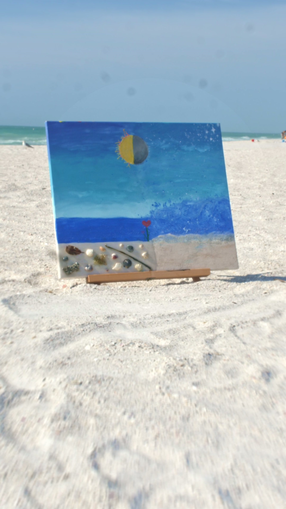
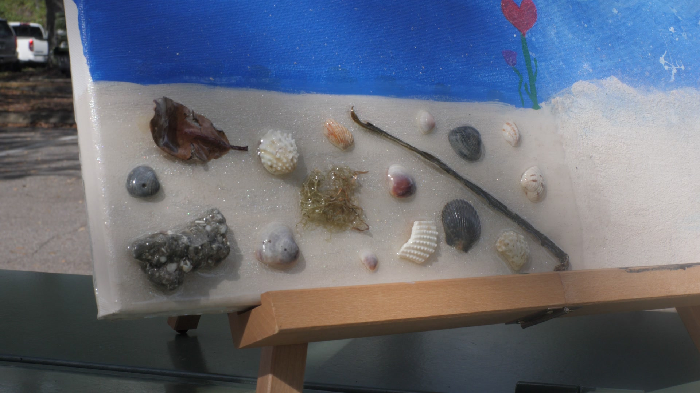
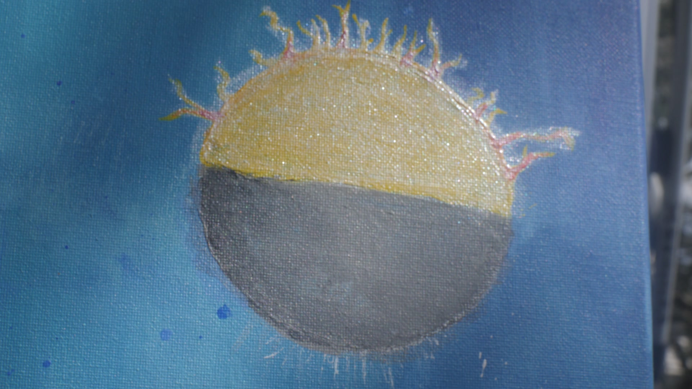
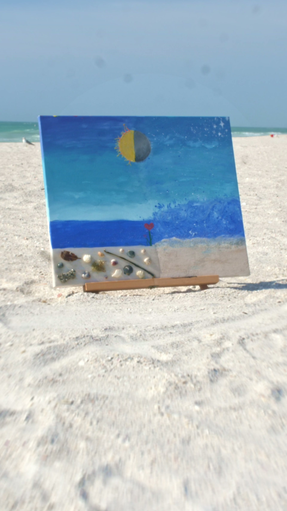

Walking Paintbrush Studio · Campaign No. 1
"Growth does not depend on perfect conditions,
but on what is cultivated where contrast exists."

A beach south of Tampa Bay · 2024The Painting
A beach south of Tampa Bay. Two people stood before a single canvas and painted simultaneously — not taking turns, but creating at the same moment, from the same surface, in the same breath.
One half emerged sunlit. Calm. The kind of morning that settles something in you. The other half came out moonlit — storm-driven, restless, carrying the weight of what isn't resolved.
Between the two halves, at the dividing line where calm meets chaos, they placed a garden. A heart-shaped plant. A small purple rose. They did not choose which half won. They planted something in the middle.
The contrast is preserved, not resolved. That is the painting's truth — and ours.
Real sand, shells, seaweed, and stone from that exact beach were sealed into the epoxy resin base. What that shore held, this painting holds. The beach did not stay behind. It came with them.

The beach, preserved
Sun and moon, one sphere
"Growth does not depend on perfect conditions,
but on what is cultivated
where contrast exists."
The garden at the center of this painting is not symbolic of something nice. It is the whole point. It lives at the exact place where the light meets the storm — where conditions are unstable, where most things wouldn't survive.
That is where the work happens. Not in controlled environments or tended greenhouses, but in the honest ones. In the contrast. Where growth is not guaranteed but remains possible — because something was planted, and tended, and refused to stop.
Walking Paintbrush Studio exists to create that space — in a canvas, and in a life. Every original artwork is tied to one cause. One painting. One purpose. Every dollar traced. Every outcome reported.
This painting belongs to the young people who are growing in conditions no one chose for them. They are the garden at the center.
Campaign Beneficiary
The Cause
Revolutionary Examples Guiding A Legacy.
REGAL works with at-risk youth — providing leadership development, mentorship, and community-centered programming for young people whose conditions are genuinely unstable. Not programs as a checkbox. A posture. The belief that every young person deserves someone who shows up and stays.
These are not statistics. They are the garden this campaign is planting for.
The impact fund from this campaign goes directly to REGAL's programs — restricted, traced, and reported. You will know what happened to your gift.

How It Works
Walking Paintbrush uses a three-bucket allocation model. Every artwork sold creates a ledger — declared, allocated, and reported. There is no guessing. You know exactly where your gift goes before you give it.
Bucket One
Artist Pay
The artist is compensated. Art as mission does not mean art without value. The creator is seen and paid.
Bucket Two
Studio Operations
The infrastructure that allows this work to continue — materials, production, platform, process.
Bucket Three
Impact Fund
Cause-specific and restricted. Sent directly to REGAL for at-risk youth programming. Reported after deployment.
Donations through this campaign go directly to the Impact Fund — for REGAL.
Every gift is a seed placed in the right soil.
Walking Paintbrush Studio
A garden grows because someone decided to tend it — not because the conditions were right, but because the decision was made anyway. You don't have to wait for perfect to do something that matters.
Give to Where the Garden GrowsPowered by Givebutter · Your gift directly funds REGAL at-risk youth programs.